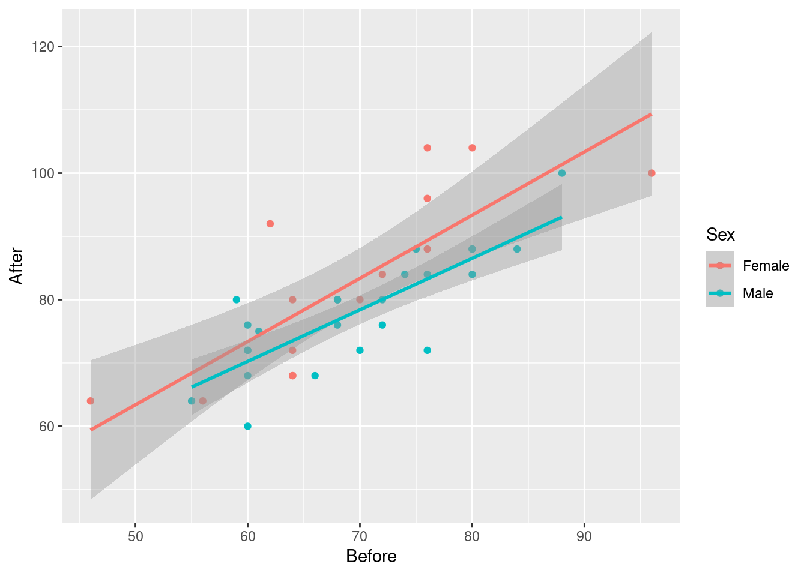
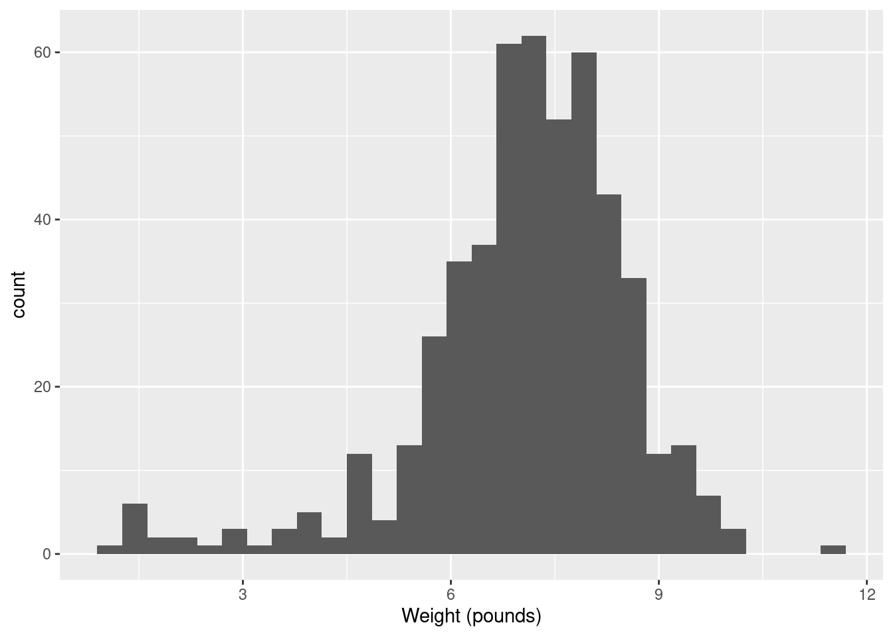
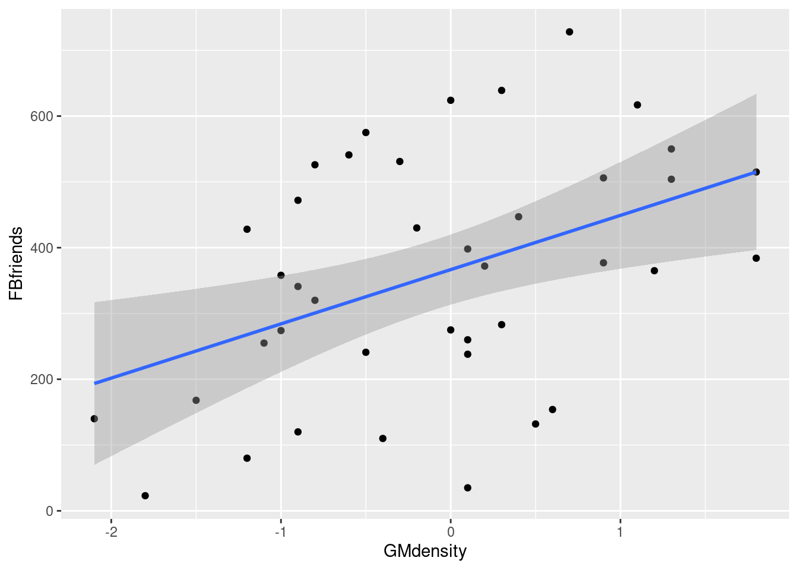
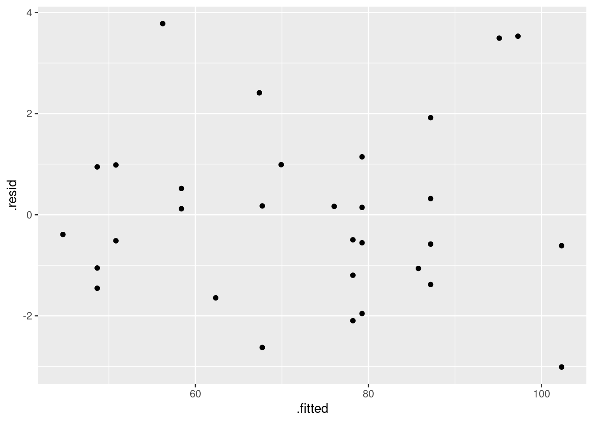
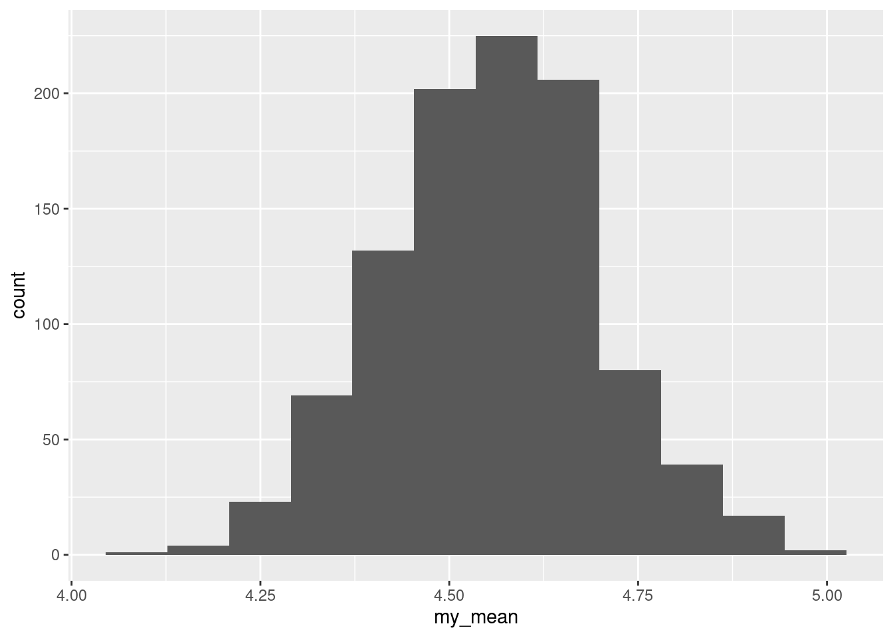
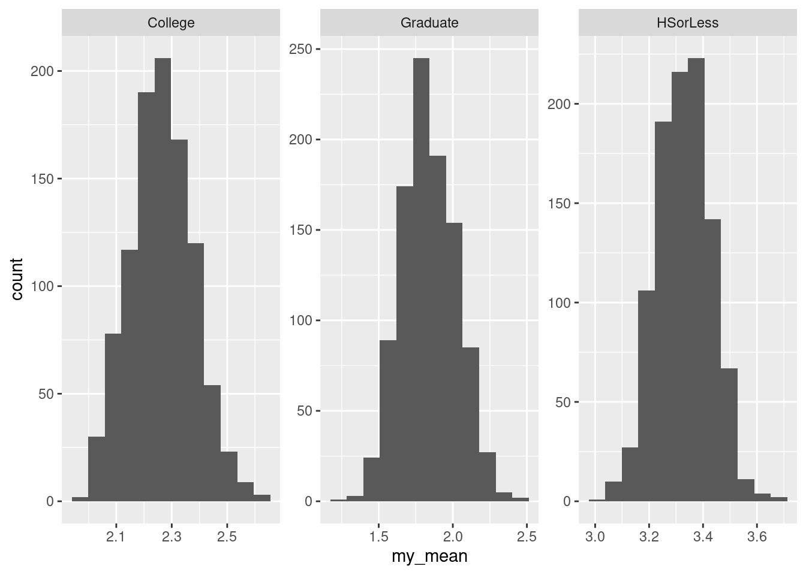

Chapter 4 Drawing graphs
4.1 Orange juice
We will read in the orange juice data again, in link, and make a suitable graph.
- The data values are separated by a space. Use the appropriate Tidyverse function to read the data directly from the course website into a “tibble”.
Solution
As before,
##
## ── Column specification ────────────────────────────────────────────────────────────────────────────────────
## cols(
## run = col_double(),
## sweetness = col_double(),
## pectin = col_double()
## )24 runs, as we had before.
- The juice manufacturer was interested in whether there was a
relationship between sweetness and pectin. To assess this, draw a
scatterplot. Does it look as if there is any kind of a
relationship? (I think
sweetnessis the outcome variable andpectinis explanatory, so draw your scatterplot appropriately.)
Solution
This requires a ggplot plot. You can go back and look
at the lecture notes to figure out how to make a scatterplot:
the “what to plot” is the \(x\)-axis and \(y\)-axis variables,
with the response on the \(y\)-axis (starting with a data frame
to get the variables from), and the “how to plot” is
geom_point to plot the points:

It looks to me as if there is a negative relationship: as pectin goes up, sweetness tends to go down. The trend appears to go top left to bottom right.
Extra: having said that, I’m wondering how much of the apparent trend is caused by those two observations bottom right with pectin over 350. If you take those away, the trend seems to me to be a lot less convincing. You could add a smooth trend to the plot, thus:
## `geom_smooth()` using method = 'loess' and formula 'y ~ x'
The smooth trend is kind of downhill, but not very convincing.
4.2 Making soap
Previously, we learned about a company that operates two production lines in a factory for making soap bars. The production lines were labelled A and B. A production line that moves faster may produce more soap, but may possibly also produce more “scrap” (that is, bits of soap that can no longer be made into soap bars and will have to be thrown away).
The data are in link.
- Read the data into R again.
Solution
Read directly from the URL, most easily:
##
## ── Column specification ────────────────────────────────────────────────────────────────────────────────────
## cols(
## case = col_double(),
## scrap = col_double(),
## speed = col_double(),
## line = col_character()
## )27 rows. line, which is either a or b, was
correctly deduced to be text.
- Obtain a histogram of the
scrapvalues, using 10 bins for your histogram.
Solution

- Comment briefly on the shape of the histogram. Is it approximately symmetric, skewed to the left, skewed to the right or something else? (By “comment briefly” I mean “say in a few words why you gave the answer you did.”)
Solution
I would call this “bimodal”. There are two peaks to the histogram, one around 250 and one around 370, with a very small frequency in between (the bar around 300). Apart from the bimodality, there is no particular evidence for a long tail on either end, so I don’t think you could otherwise call it anything other than symmetric. Having said that (this is going beyond the question), the way a histogram looks can depend on the bins you choose to draw it with. This is 8 bins rather than 10:

The middle low-frequency bin has gone, and this one just looks symmetric, with a kind of “flat top”.
- Make side-by-side boxplots of scrap values for each production line.
Solution

One categorical, one quantitative variable, so boxplots make sense.
- Do you think your boxplot says that there are differences in the amount of scrap produced by the two production lines, or not? Explain briefly.
Solution
I would say that there is a difference between the two production lines, with line A producing an average (median) of about 330 and line B producing a median of about 275. But you could also make the case that, although the medians are rather different, there is a lot of variability and hence a lot of overlap between the two boxplots, and therefore that there is not a “substantial” difference. I would say that either of those answers are good . This is going to be a common theme in this course: I am going to ask you to make a decision and support it, where the reasons you provide are often more important than the decision you make.
Extra: you might be wondering whether the medians, or means, since there is no serious skewness here and definitely no outliers, are “significantly different”. This is inference, which we will come to later, but a preview looks like this:
##
## Welch Two Sample t-test
##
## data: scrap by line
## t = 1.2493, df = 21.087, p-value = 0.2253
## alternative hypothesis: true difference in means is not equal to 0
## 95 percent confidence interval:
## -26.97888 108.21222
## sample estimates:
## mean in group a mean in group b
## 333.5333 292.9167They are not: the P-value of 0.22 is not anywhere near as small as 0.05, so we can’t reject the null hypothesis that the two lines have equal mean amount of scrap.
Rusty on this stuff? Don’t worry; we’re going to come back to it later in the course.
I was also wondering about something else: that bimodal histogram. Could that be explained by the scrap values being two different production lines being mixed together? One way to understand that is to have two separate histograms, one for each line, side by side, which is what facetting does. There is an extra wrinkle here that I explain afterwards:

I could have used facet_wrap, but that would have put the
histograms side by side, and I wanted them one above the other (for
ease of comparison, since they’ll be on the same
scale). facet_grid is like facet_wrap, but offers
you more control over where the facets go: you can arrange them above
and below by a variable, or left and right by a variable. Whatever is
facetting the plots up and down (on the \(y\) axis) goes before the
squiggle, and whatever facets them left and right goes after. If there
is nothing separating the facets in one direction, here horizontally,
the variable is replaced by a dot.
In some ways, facet_grid is also less flexible,
because the facets have to be arranged up/down or left/right by a
variable. That worked here, but if you think back to the Australian
athletes, where there were ten different sports, it was
facet_wrap that did the right thing, arranging the sports
along rows and columns to produce a pleasing display.
All right, that bimodality. I was expecting that the scrap values from one line would be centred about one value and the scrap values from the other line would be centred about a different value, with a gap in between. But that’s not what happened at all: the line B values are all over the place, while it’s the line A values that are actually bimodal all by themselves. I’m not sure whether that really means anything, since the data sets are pretty small, but it’s kind of interesting.
- We started out with the suspicion that if the line was run
faster, there would be more scrap. We haven’t assessed this
yet. Draw a scatter plot with
scrapon the \(y\) axis andspeedon the \(x\) axis.
Solution
Same mechanism as before:

- What do you think is the most important conclusion from your plot of the previous part? Describe your conclusion in the context of the data.
Solution
There seems to be a pretty evident upward trend, apparently
linear, which means that if the speed of the production line is
higher, the amount of scrap produced is also higher.
My last sentence was meant to remind you that
“there is an upward trend” is not a complete answer:
we are concerned
with what that upward trend tells us about the data.
This, in other words, confirms the suspicion expressed in the
question, which was therefore a rather large clue: more speed
tends to go with more scrap.
That was as far as I wanted you to go: there seems to be an
association with speed, and there might be an association with
line that turned out not to be statistically significant.
What we haven’t done is to assess the relationship between speed
and scrap for each production line. To do that, we want
to plot the scrap-speed points distinguished for each production
line. ggplot makes that easy: you add a
colour
If you are concerned about the spelling: the guy who wrote ggplot is from New Zealand, where they spell colour the same way we do. However, if you want to use color, that works too. to say what you want to
distinguish by colour. This is two quantitative variables and one
categorical variable, if you want to think of it that way:

Notice that we get a legend, automatically.
What is interesting about this one is the red dots are mostly at the top (for any given speed), and the blue dots are mostly at the bottom. That seems to mean that when we account for speed, there is a difference between lines.
I want to show you one more embellishment, which is to put the
regression lines on the plot for each group separately. This is where
ggplot is so nice, since I just have to add one thing:
ggplot(soap, aes(x = speed, y = scrap, colour = line)) +
geom_point() + geom_smooth(method = "lm", se = F)## `geom_smooth()` using formula 'y ~ x'
The points and lines have come out in different colours, without our having to think too hard.
Both lines show an upward trend, with about the same slope, which means that regardless of line, increasing the speed goes with increasing the scrap by the same amount. The fact that the red line is above the blue one, however, suggests that production line A produces more scrap at the same speed than production line B.
From a management point of view, there is an interesting dynamic at work: if you run the production line faster, you’ll produce more bars of soap, but you’ll produce more scrap as well. The crucial thing for the people in the supervisor’s office is how much raw material is used per bar of soap, and if you make the soap bars faster, you might use more raw material, which will eat into your profits (from one angle), but you will also have more bars of soap to sell.
Here’s another way to see the same thing. I’m definitely not expecting you to follow the code, but you can admire the result!
soap2 <- soap %>% select(-line)
ggplot(soap, aes(x = speed, y = scrap)) +
geom_point(data = soap2, colour = "grey") +
geom_point(aes(colour = line)) + facet_wrap(~line) $
$
The idea is that we plot all the points in grey (to “put them in the background”) and then in each plot we plot the points again, coloured, for the group we are looking at: line A in the left, line B on the right. This is another way of seeing that line A has more scrap than line B, given the speed at which the line was being run. (I discovered this technique only yesterday. I think the code is remarkably concise for what it does.)
The logic of the code is:
create a new data frame that contains everything in
soapexcept forlinemake a scatter plot of all the points in this new data frame, coloured grey
plot the points again (from the original data frame), coloured by which production line they’re from
produce a separate scatterplot for each production line.
The trick about creating the new data frame was to enable plotting of
all points regardless of group on each subplot (“facet” in
ggplot terminology), as well as the ones that come from that
production line.
I don’t expect you to be able to follow all the details of the code
below, either,
but I would like you to try and get the logic. What we do is a
regression predicting scrap from two things:
speed and production line. The results we get are these:
##
## Call:
## lm(formula = scrap ~ speed + line, data = soap)
##
## Residuals:
## Min 1Q Median 3Q Max
## -39.557 -14.161 -0.121 17.518 33.953
##
## Coefficients:
## Estimate Std. Error t value Pr(>|t|)
## (Intercept) 80.41099 14.54379 5.529 1.10e-05 ***
## speed 1.23074 0.06555 18.775 7.48e-16 ***
## lineb -53.12920 8.21003 -6.471 1.08e-06 ***
## ---
## Signif. codes: 0 '***' 0.001 '**' 0.01 '*' 0.05 '.' 0.1 ' ' 1
##
## Residual standard error: 21.13 on 24 degrees of freedom
## Multiple R-squared: 0.9402, Adjusted R-squared: 0.9352
## F-statistic: 188.6 on 2 and 24 DF, p-value: 2.104e-15The P-values for speed and line are the second and
third things in the last column, \(7 \times 10^{-16}\) and \(1 \times 10^{-6}\)
respectively. These are both very strongly significant, in contrast to
the two-sample \(t\)-test where line was not significant.
So does production line make a difference or not?
The plot says that it does, and the meaning of model scrap.1
just above is that
, and
.
(In the two-sample \(t\)-test above we didn’t
account for speed at all, since the various speeds were all mixed up.)
There is a moral to this story, which I would like you to get even if
you don’t get any of the statistics: if a variable makes a
difference, it should be in your model and on your
graph,
Meaning that the model should contain all three variables, speed, scrap and line.
because it enables you to get better (more precise) conclusions about your
other variables. Here, there really is a difference between the
production lines, but the \(t\)-test was too much of a blunt instrument
to unearth it (because speed made a difference as well).
4.3 Handling shipments
We learned earlier about a company called Global Electronics that
imports shipments of a certain large part used as a
component in several of its products. The size of the shipment varies
each time. Each shipment is sent to one of two warehouses (labelled A
and B) for handling. The data in
link show the
size of each shipment (in thousands of parts) and the direct
cost of handling it, in thousands of dollars. Also shown is
the warehouse (A or B) that handled each shipment.
- Read the data into R and display your data frame.
Solution
A .csv:
##
## ── Column specification ────────────────────────────────────────────────────────────────────────────────────
## cols(
## warehouse = col_character(),
## size = col_double(),
## cost = col_double()
## )- Make a scatterplot of the cost of handling each shipment as it depends on the shipment’s size.
Solution
The wording of the question says that cost is the response and so
belongs on the \(y\)-axis. To make the plot, ggplot with an
x= and a y= in the aes (the “what to plot”
part), and a geom_point() after (the “how to plot it”):

As a matter of coding, there are usually two brackets to close
after the aes, the one that begins the ggplot and
the one that begins the aes.
- What kind of relationship do you see on the scatterplot? Do you think a straight line would describe it appropriately? Explain briefly.
Solution
I see an upward trend: a shipment with larger size costs
more to handle.
If you look carefully at the scatterplot, you see that the cost of
handling a small shipment goes up fairly steeply with its size,
but the cost of handling a large shipment, while it still
increases with size, does not increase so fast. Thus
having one straight line to describe the whole relationship would
not work so well.
The relationship is actually two different
straight lines joined end-to-end, which we will explore later, but
if you think the relationship is curved, I’ll accept that. The
point is to get at the idea that the rate of increase is not
constant.
- When a shipment comes in, the cost of handling it is not known. A decision is made about which warehouse to send it to, and then, after it is handled, the cost is recorded. What do you think determines which warehouse an incoming shipment goes to? Provide a graph to support your answer.
Solution
The veiled hint in the question is that the decision must depend
on size, since it cannot depend on cost. So we
have one quantitative variable size and one categorical
variable warehouse, which suggests drawing boxplots:

Well, there’s the answer right there. When the shipment has small
size, it goes to warehouse A, and when it’s large, it goes to
Warehouse B. We know this because all the shipments smaller
than about 250 (thousand parts) went to A and all the shipments
larger than that went to B. (If you want to provide a number to
delineate “small” and “large”, anything between the largest A,
about 225, and the smallest B, about 290, will do.)
Another way to think about this is to add something to the scatterplot you drew before. The obvious thing is to make the two warehouses different colours:

As a point of technique, you can split lines of code to make them fit
on your screen. You can do this as long as , so that R knows more is to
come. Ending a line with a pipe symbol, or, as here, with one of the
pluses in the middle of a ggplot, will work. If you put the
plus on the start of the next line, you’ll get a blank plot, because R
thinks you’re done plotting. Try it and see.
Anyway, this plot tells exactly the same story: the small shipments
(in size or cost) go to Warehouse A and the large ones to Warehouse
B. But we don’t know cost when the decision is made about which
warehouse to send a shipment to, so the decision must be based on
size.
In the place where I got these data, it said “larger shipments are sent to Warehouse B, since this warehouse has specialized equipment that provides greater economies of scale for larger shipments”. That is to say, very large shipments are more expensive to handle, but not as expensive as you might think. This is the same idea that it costs more to ride the GO bus from UTSC to York U than it does to ride from UTSC to Scarborough Town, but if you work out how much it costs per kilometre, the longer journey costs less per km. As of when I’m writing this, $5.30 for the 7.2 km to Scarborough Town and $6.75 for the 38 km to York. That’s quite an economy of scale, isn’t it? That makes sense with our scatterplot, because the slope for larger shipments is less than for smaller shipments.
When we get to regression later, we’ll see what happens if we fit a straight line to data like these, and how to tell whether we really ought to be able to do better with a different form of relationship. There is also a trick to fit what is called a “piecewise linear regression”, which has one slope for small shipment sizes, a different (smaller) slope for large ones, and joins up in the middle. But that’s well beyond our scope now.